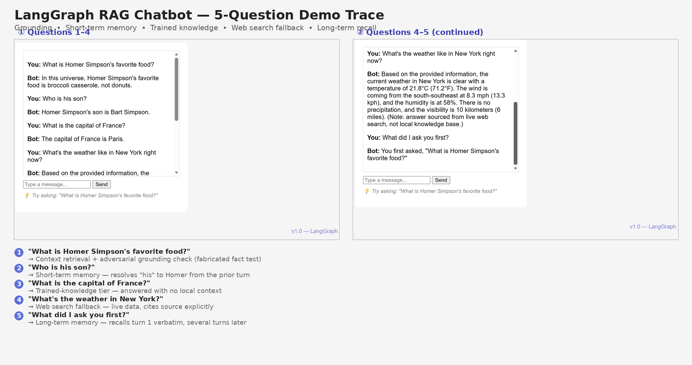
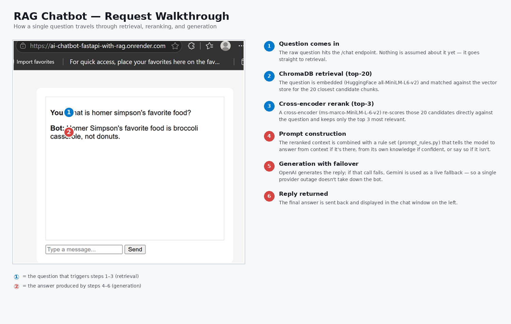
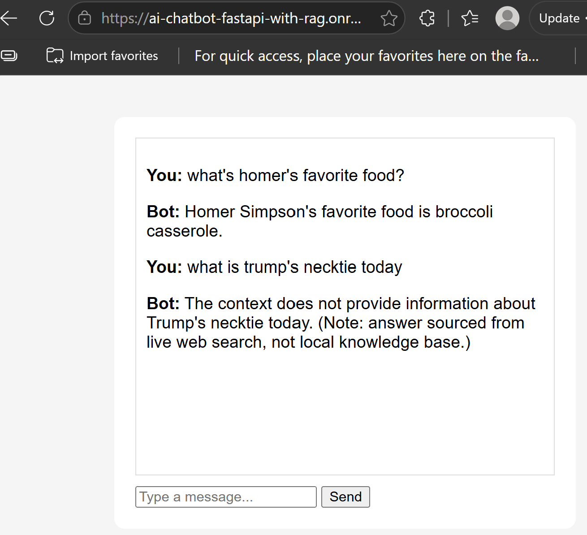
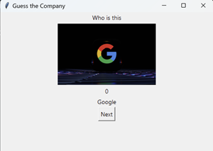

Silicon Valley Tech Co. (Ticketing Marketplace) — Senior iOS Developer
Production API integration and mobile architecture — directly applicable to backend service design today.
GenAI / LLM Application Engineer — Python · FastAPI · RAG · LangGraph
Formerly a senior iOS engineer at Silicon Valley tech companies (ticketing marketplace, online education, e-commerce marketplace) — now building and shipping AI-powered backend applications. My latest project is a containerized FastAPI chatbot with a full Corrective RAG (CRAG) pipeline — ChromaDB, HuggingFace embeddings and cross-encoder reranking, multi-provider LLM support (OpenAI and Gemini) with automatic failover, a web-search fallback (Tavily) that kicks in when local knowledge falls short, and LangGraph orchestration with persistent multi-turn memory — deployed live on Render and Google Cloud Run. I bring production engineering habits (Git, testing, API design) to a new stack.

Migrated orchestration from hand-rolled control flow to LangGraph: the pipeline is now a
typed StateGraph with conditional routing between context-grounded,
trained-knowledge, and web-search generation paths, plus a MemorySaver
checkpointer that gives the system persistent multi-turn conversational memory across
separate API calls. Kept the original manual-RAG version live on Render as a deliberate
before/after architectural comparison.

The original RAG chatbot, built entirely from primitives — no LangChain — specifically to understand retrieval, reranking, and failover internals before adopting a framework. Adds a Corrective RAG (CRAG) grading step that evaluates retrieval quality and falls back to live web search (Tavily) when local knowledge is insufficient. Multi-provider LLM support with automatic failover (OpenAI primary, Gemini backup) — swapping provider priority order cut response latency significantly. Kept live on Render as a before/after comparison against the LangGraph version above.

A containerized chat application built with FastAPI and the OpenAI API, deployed live on Render with a dedicated health-check endpoint. Along the way I debugged real cross-environment issues: a Python version mismatch that broke the Docker build, missing dependencies that only surfaced inside the container, and secure API key handling across local, containerized, and production environments.

An interactive quiz game built with Python, using tkinter for the UI and CSV-driven question data.